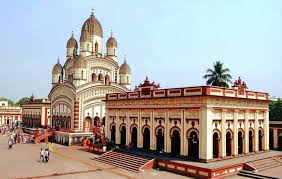

Dakshineswar Kali Temple

Location: On the eastern bank of the Hooghly River, near Kolkata
Deity: Goddess Bhavatarini, a form of Kali
Built By: Rani Rashmoni in 1855
Architecture: Classic Navaratna (nine spires) Bengali temple style
Famous For: Associated with Sri Ramakrishna Paramahamsa, tranquil riverside location, and large courtyard with 12 Shiva temples
Spiritual Hub: Pilgrims, tourists, and spiritual seekers visit year-round
Festival: Kali Puja and Navaratri celebrated grandly
Kalighat Temple
Location: Kalighat area, south Kolkata
Deity: Goddess Kali (as Kalika)
One of the 51 Shakti Peethas: Where the right toe of Sati is believed to have fallen
History: Ancient origins; the current structure was built in 1809
Architecture: Traditional Bengali hut-style (chala) with a unique idol of Kali
Significance: One of the holiest sites for Shakti worship in India
Rituals: Known for intense devotion, daily offerings, and tantric significance
Festival: Massive crowds during Kali Puja, Durga Puja, and Navaratri